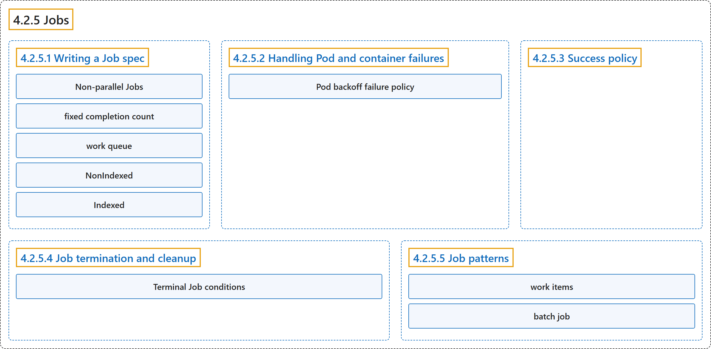

4.2.5 Jobs
Classification

Glossary
| Term | Definition | 中文翻译 | Source |
|---|---|---|---|
| 4.2.5 Jobs Job |
"Jobs represent one-off tasks that run to completion and then stop." | Job 代表一次性任务，它们运行至完成后即停止。 | The Kubernetes Authors, n.d., "Jobs", para. 1 |
| 4.2.5.1 Writing a Job spec 编写 Job 规约 |
"There are three main types of task suitable to run as a Job:" | 有三种主要类型的任务适合以 Job 运行： | The Kubernetes Authors, n.d., "Parallel execution for Jobs", para. 1 |
| Non-parallel Jobs 非并行 Job |
"Non-parallel Jobsnormally, only one Pod is started, unless the Pod fails." | 非并行 Job：通常只启动一个 Pod，除非该 Pod 失败。 | The Kubernetes Authors, n.d., "Parallel execution for Jobs", para. 2 |
| fixed completion count 固定完成计数 |
"Parallel Jobs with a fixed completion count:specify a non-zero positive value for .spec.completions." |
具有固定完成计数的并行 Job：指定 .spec.completions 的一个非零正值。 |
The Kubernetes Authors, n.d., "Parallel execution for Jobs", para. 3 |
| work queue 工作队列 |
"Parallel Jobs with a work queue:do not specify .spec.completions, default to .spec.parallelism." |
使用工作队列的并行 Job：此时不指定 .spec.completions，默认取 .spec.parallelism。 |
The Kubernetes Authors, n.d., "Parallel execution for Jobs", para. 4 |
| NonIndexed NonIndexed |
"NonIndexed (default): the Job is considered complete when there have been .spec.completions successfully completed Pods." |
NonIndexed（默认）：Job 被视为完成，当成功完成的 Pod 数达到 .spec.completions 时。 |
The Kubernetes Authors, n.d., "Completion mode", para. 2 |
| Indexed Indexed |
"Indexed: the Pods of a Job get an associated completion index from 0 to .spec.completions-1." |
Indexed：Job 的各个 Pod 获得一个关联的完成索引，范围是 0 到 .spec.completions-1。 |
The Kubernetes Authors, n.d., "Completion mode", para. 3 |
| 4.2.5.2 Handling Pod and container failures 处理 Pod 和容器失败 |
(No definition) | （无定义） | The Kubernetes Authors, n.d., "Handling Pod and container failures" |
| Pod backoff failure policy Pod 回退失败策略 |
(context) "There are situations where you want to fail a Job after some amount of retries due to a logical error in configuration etc." | （语境）有些情况下，你希望让 Job 失败，在若干次重试之后，原因是配置中的逻辑错误等。 | The Kubernetes Authors, n.d., "Pod backoff failure policy", para. 1 |
| 4.2.5.3 Success policy 成功策略 |
"When creating an Indexed Job, you can define when a Job can be declared as succeeded using a .spec.successPolicy, based on the pods that succeeded." |
创建 Indexed Job 时，你可以定义何时可以宣告 Job 成功，方法是用一个 .spec.successPolicy，依据是成功的 Pod。 |
The Kubernetes Authors, n.d., "Success policy", para. 1 |
| 4.2.5.4 Job termination and cleanup Job 的终止与清理 |
(No definition) | （无定义） | The Kubernetes Authors, n.d., "Job termination and cleanup" |
| Terminal Job conditions Job 终止状况 |
"A Job has two possible terminal states, each of which has a corresponding Job condition:" | Job 有两种可能的终止状态，每种都有对应的 Job 状况： | The Kubernetes Authors, n.d., "Terminal Job conditions", para. 1 |
| 4.2.5.5 Job patterns Job 模式 |
(No definition) | （无定义） | The Kubernetes Authors, n.d., "Job patterns" |
| work items 工作项 |
"The Job object can be used to process a set of independent but related work items." | Job 对象可用来处理一组相互独立但又相关的工作项。 | The Kubernetes Authors, n.d., "Job patterns", para. 1 |
| batch job 批处理作业 |
(context) "Here we are just considering one set of work items that the user wants to manage together — a batch job." | （语境）这里我们只考虑一组工作项，用户想把它们一起管理，即批处理作业。 | The Kubernetes Authors, n.d., "Job patterns", para. 2 |
References
The Kubernetes Authors. (n.d.). Jobs. Kubernetes Documentation. Retrieved October 31, 2026, from https://kubernetes.io/docs/concepts/workloads/controllers/job/